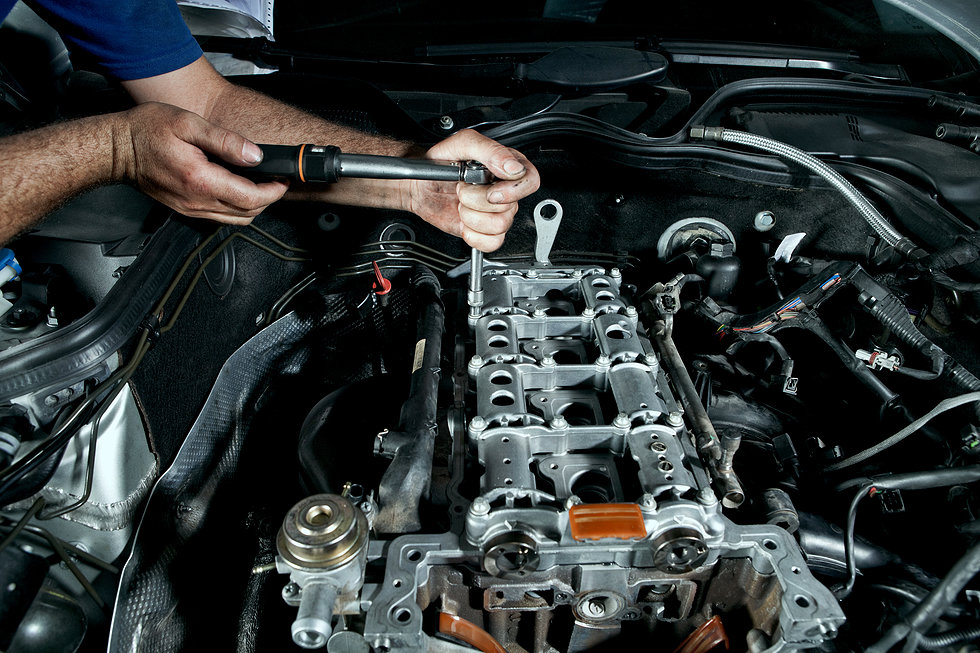

Um Breve Resumo
A Mecânica TurboTech é uma oficina especializada em soluções automotivas de alta performance e manutenção completa de veículos. Nossa equipe de mecânicos qualificados utiliza tecnologia de ponta para garantir diagnósticos precisos e serviços rápidos, desde revisões de rotina até reparos complexos em motores, transmissões e sistemas eletrônicos. Oferecemos serviços de tuning, ajustes de performance e personalização de veículos, sempre com foco na segurança e no desempenho. Na TurboTech, o seu carro está nas mãos de profissionais que entendem a importância de qualidade e confiança em cada detalhe.